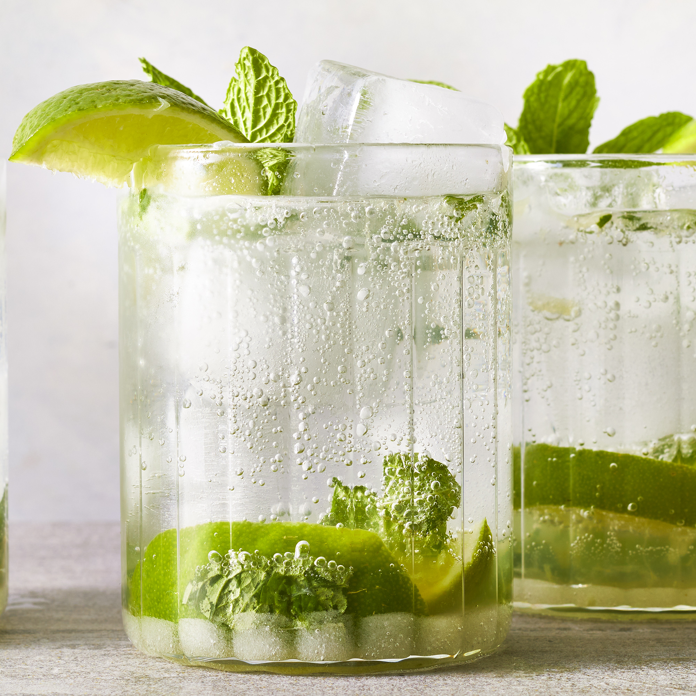

Mojito Cocktail

What is a Mojito?
A mojito is a class Cuban cocktail the is made from a few simple ingredients. This drink is the perfect balance of sweet and tart, not to mention refreshing! The recipe makes one serving, but you can easily scale it up to make a pitcher for summertime entertaining.
Ingredients
- 10 fresh mint leaves
- 1/2 medium lime, cut into 3 wedges, divided
- 2 tablespoons white sugar, or to taste
- 1 cup ice cubes, or as needed
- 1 1/2 fluid ounces white rum
- 1/2 cup club soda, or as needed
Directions
- Place mint leaves and 1 lime wedge into glass
- Muddle and crush the ingredients
- Add remaining lime wedges with 2 tablespoons of sugar
- Muddle the ingredients again. DO NOT STRAIN THE MIXTURE
- Fill glass almost to the top with ice
- Add in the rum and fill with the club soda
- Stir, taste, add more sugar if desired
- Enjoy!